Home Sweet Home
It's been a long time since I last wrote a post. I wanted to take a moment to reflect on the journey that has brought me to this point. After all the ups and downs, the challenges and triumphs, I finally feel like I've found my place. Home is not just a physical space; it's a feeling of comfort, belonging, and peace. The process all started at the very begninning of June. I got a pre-approval for a mortgage, and I was able to begin the quest of finding my home. I honestly did not know where to start, but luckily I ran into Mallory's Facebook page. I was already looking at houses in April and May, and the algorithm on Facebook caught on and started showing me different realtor posts with houses for sale in the area. I saw one of Mallory's posts and gave it a like. The house in the posting was cute, but I wasn't ready to to start the buying process yet since it was still 5 months until my lease ended. Mallory saw my like and she sent me a message asking if I was looking for a house. I told her that I was, but I wasn't ready to start the process yet. She said that was fine, and she would be happy to help me when I was ready. I told her that I would reach out to her when I was ready to start looking, but because of that, I had a realtor two months before I was ready to start looking. She was very helpful and helped paved the way for me to find my home and help me continually take the next step.
So back to the pre-approval. I got pre-approved for a mortgage in June, and I was able to start looking at houses. I went on Zillow and started browsing for houses in the area I wanted to be in and filtered for criteria's that I wanted. The biggest criteria was that I wanted a house with 3 garages. One stall for trucky, one for Jennifer and another for Anh. I found 3 listings, and sent them to Mallory, she scheduled the houses and I was on my way to my first house tours. It was the very first time I had met Mallory in person, the comments my sister made about her were "She's hot". All I'll say is, the sisters weren't lying, but no more comment on that subject since I can get in serious trouble now... Anyway, she made me sign some paperwork for realtor/client privileges. I was more excited about the house, so I quickly skimmed the paperworks and signed them. I told this exact story to Kevin Buckley the next day during lunch and he jokingly said that I signed half of my ownership rights away to Mallory because I couldn't take my eyes off of her and put them on the papers. :D
The first 6 house tours were great. It was exciting to see different homes and realize what I actually wanted in a house. However, I also quickly realized that I was punching way above my weight. I couldn't comfortably afford any of the houses I was looking at by myself. I was pre-approved for $400,000, so looked at houses from $370-$390k. It's fun looking at nice fancy houses, but when the ammortization scheduled came into the picture, I realized I didn't want to be paying that much monthly for a house. So I dropped my budget down to below $330k and went on a few different house tours in that price range. I wasn't as impressed with these houses for obvious reasons, they were always missing something that I wanted and Buckley and a few other co-workers were constantly telling me not to cave into a house to end the process. For the amount of money that I was spending, I should be getting a house that checks all of my boxes. I'm glad he told me that, it helped me hold out for the right house and 4618 E Valdez Dr finally hit the market. It was listed for sale the morning of 7/15, and I scheduled a tour that same morning for the evening. I was very impressed with the house, and it checked all of my boxes, 4 bedrooms, 4 bathrooms, the garage fits 4 cars, the price was below $330k, and the house has a MASSIVE DECK. I went home that night, didn't see anything missingg from the house and made my offer that night for asking price. The seller accepted the following morning at around 9:00AM. Mallory gave me the call and told me I was officially under contract! I was honestly kind of scared, I just made an offer for the biggest purchase of my life. I'm a software engineer in a world where AI is beginning to take over most of my tasks, and I'm going to sign a loan for the next 30 years, how exciting!
Fast forward to the morning of 9/3, my closing day. I was expecting to be signing paper works in the office for 2-3 hours, but no. The process was very swift, I was in and out within 30 minutes. That felt too easy for apurchase of this magnitude, but I was happy that it was quick and painless. Every thing else in the house buying process felt long and cumbersome, so thank goodness the final process isn't a drag.
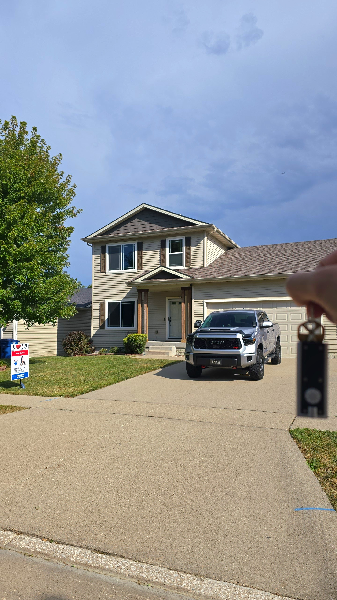
The two things I own that I am most proudest of. Acquiring my truck at the age of 21 while finishing out college, and now my house at the age of 26.
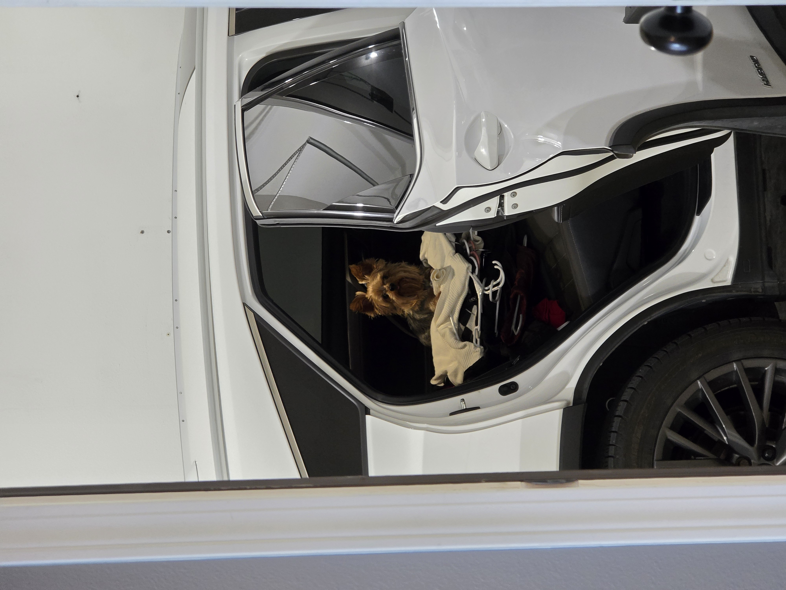
This is Jennifers car in the garage with her clothes in the backseat. She is moving her clothes over to the house from the apartment, and Gibby would not leave the car. He's ready to ride or die with our apartment
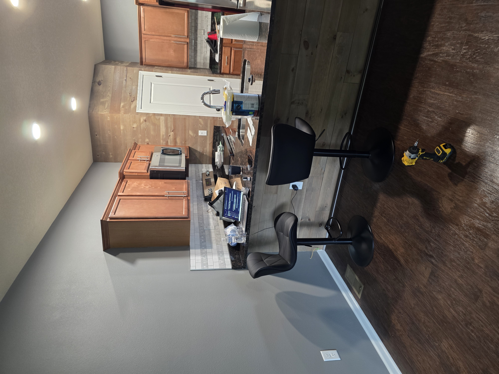
Barstools were one of the first purchases for the house. A place to eat and temporarily work from home as I let electrical contractors in and carpettint contractors.
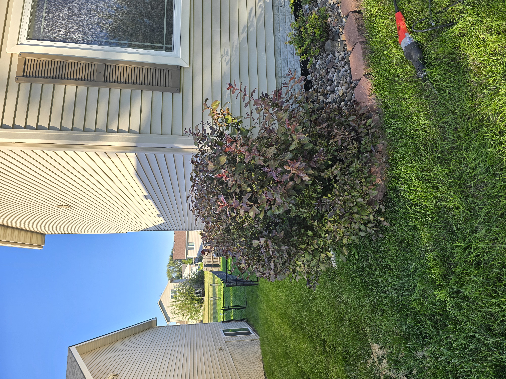
This bush was bothering me and making mowing around the corner difficult.
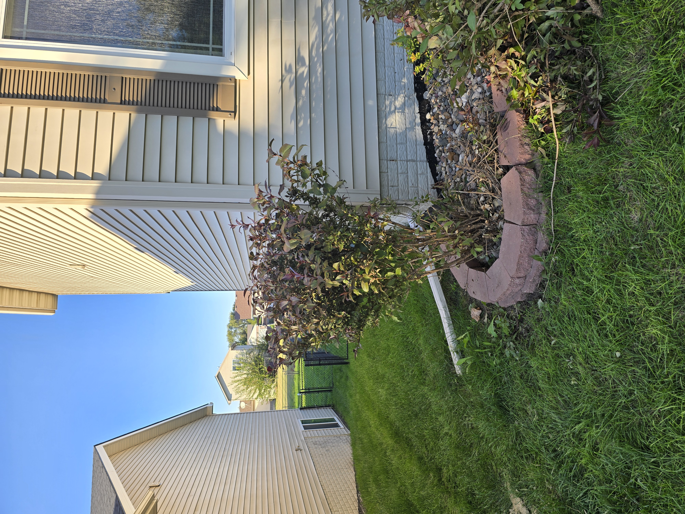
Trimmed the bush!
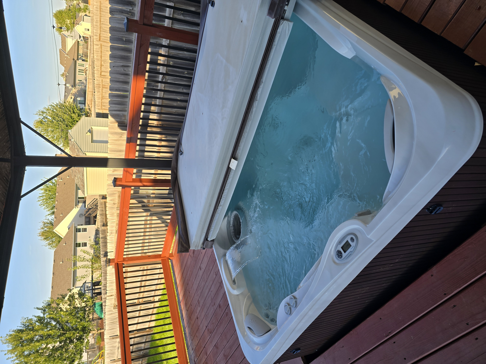
Drained, scrubbed and filled the hot tub! This has been a nice addition to the house. I've enjoyed the hot tub every time I've been in it. It even lights up at night!
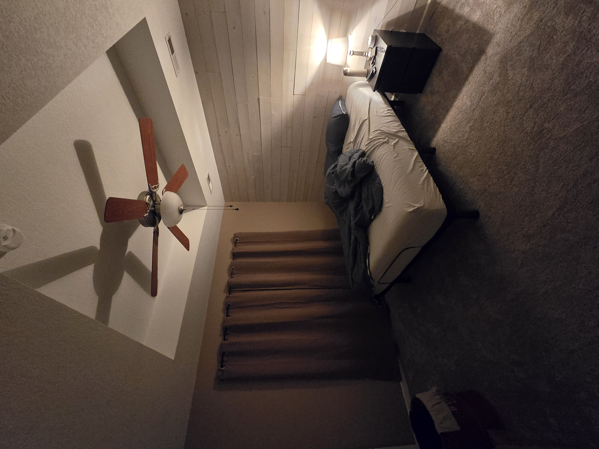
My bedroom. Not exactly decorated, but I'll eventually add some personality to it. Hallie was nice enough to help me paint the upstairs bedroom, bathroom and closet!
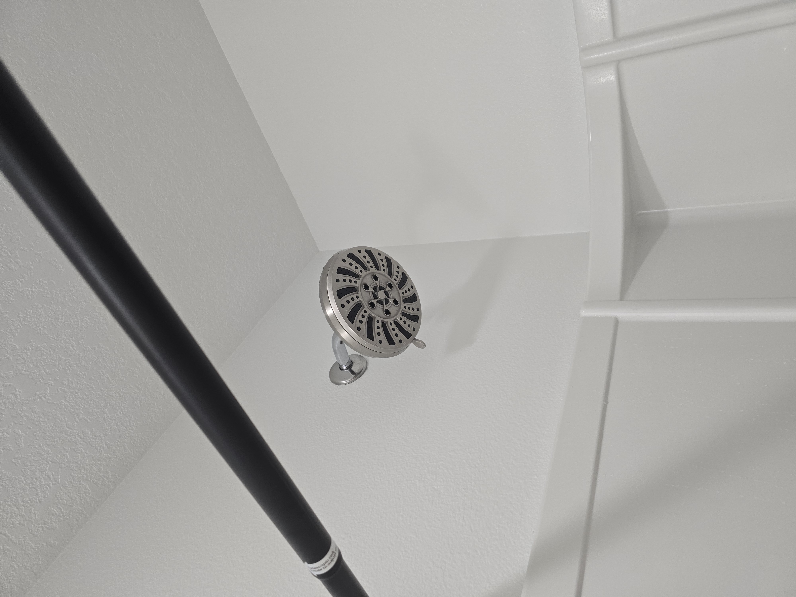
Jennifer's previous shower head didn't have good water pressure, so she requested the landlord put in a new one.
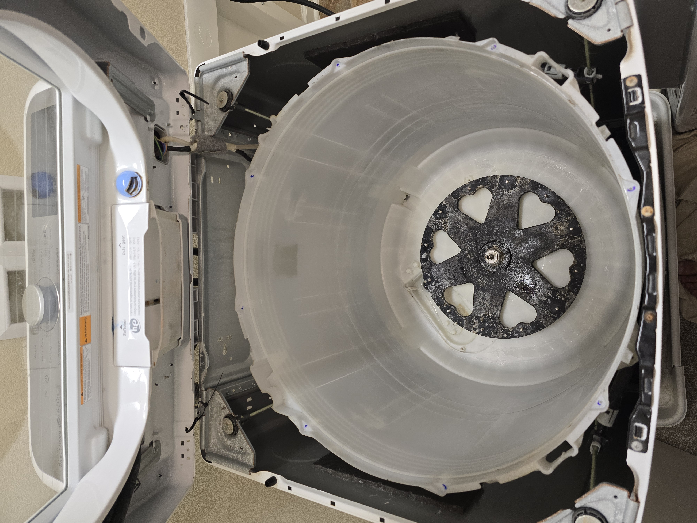
The previous fella that lived in this house worked in construction, so he knew how to do a lot of home renovations and repairs, which was good for the house, but not so much for the washer. The washer had several pounds of sand in the drum. I disassembled the washer and gave every possible surface a good scrubbing.
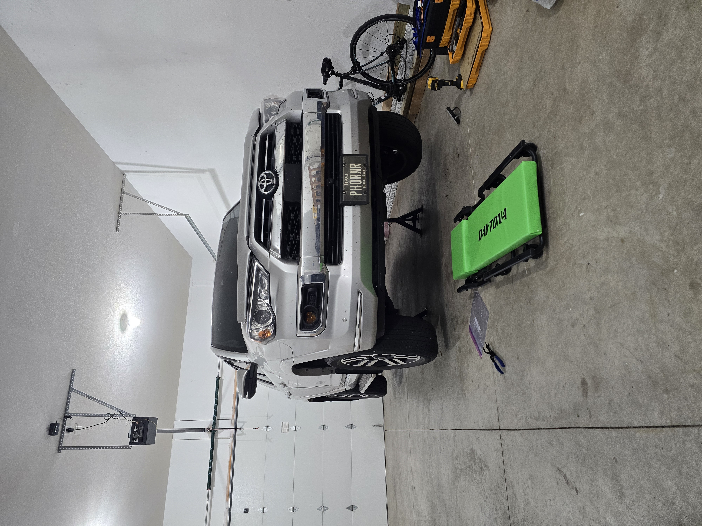
Anh's 4Runner needed an oil change. Too finally have all my tools in an easy to access garage with abundant lighting has been my dream for a while. Plus I'm the mechanic now!
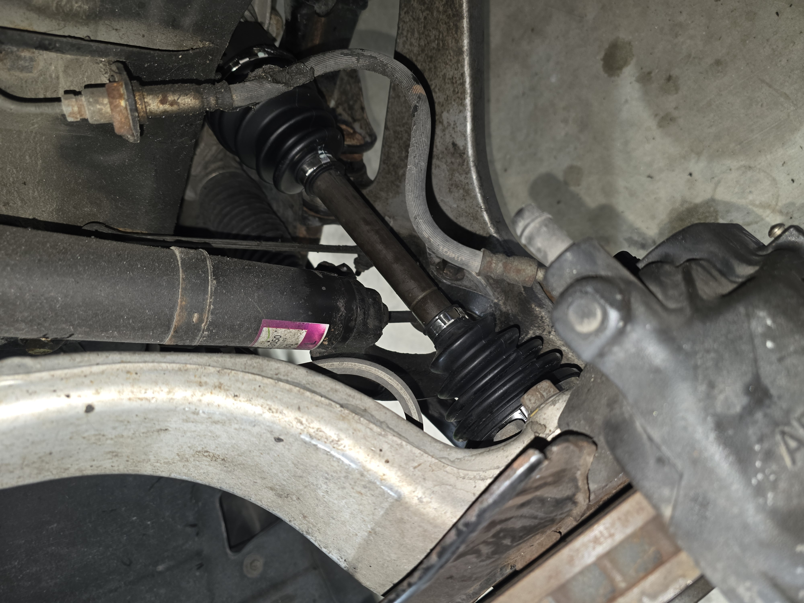
The Lexus has had a torn cv axle boot for about a year now. I didn't want to pay a shop to replace it, and I didn't want to do it in the apartment garage in case I couldn't finish the job. Here's the Lexus with a new OEM cv axle! The job was so much easier and smoother than I anticipated.
After the initial home projects and moving myself plus two sisters, I still feel burnt out from all the new house stuff, so haven't been tackling as much home projects like I initially thought I would. But upcoming I'd like to paint the garage to make it more professional for my detailing business I want to start, along with paint the basement living room. With Black Friday around the corner, I'm looking to procure every thing I'd need to start my detailing business, that way when Spring comes around, all I need to do is start advertising to see if I can get some clients. My approach to attracting customers would be stellar pricing for the first X amount of customers. Once I have established a good reputation, I can start adjusting my pricing based on my backlog of work.